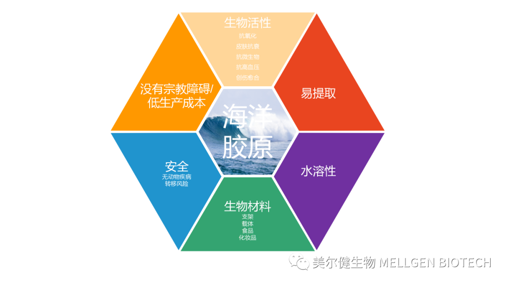
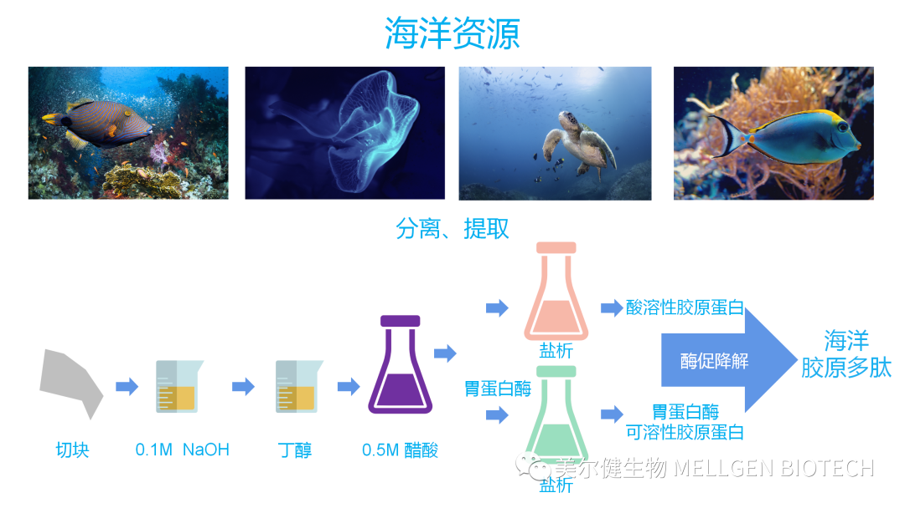
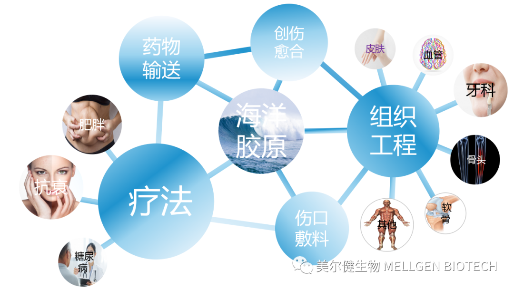

Collagenis become Proteinsin high biosubstance major molecules，high 25％ 35％，is substance and substance substance Protein one ， is biosubstance Cellular （ECM） fibronectin Protein，for and enhance and 。 in 90％ Collagenis IType ，its Collagentype Type II，III and IVType 。by in Biocompatibility，can biosubstance resolve ， ， and high applied [1]， Collagen in sectorbeen As a biosubstance 。Collagen from and become high fibronectin （3D） ， in multi-units on combatting cell biology 。 ，Collagenbeen applied in 3DCellular ， process ，active Ingredients and biomedical science Biomimetic [ 2]。 ，it and biosubstances its become for A Novel recent manager biosubstance ，been applied in Cosmetics，active Ingredients， and biosubstance Technology sectors。 Collagen from bio substance （ such as and ）in Extract，natural while，recent years coming （ ）， and and ， for applied bio substance Collagen and collagen bioProductssafety full [ 3]。 ，by in ， such as Collagen， and Collagen， substance collagen Extract 。 ， A Novel full new Source Collagen，using generation bio substance Collagen。 biosubstance is new and Bioactivity substance Source。 Collagen（Marine Collagen，MC）coming from type 、 、 and Jellyfishand others biosubstance ， substance Collagen More 。it in Extract，Water Soluble ， ， substance and ，safety full high ， science and substance manager ， in source 。 ，MC become for substance collagen generation ，while ， in Cosmetics， ， and in to applied 。
2. source from biosubstance Collagen global 70％using on ， substance full global biosubstance multi- general one ， it is A Novel major natural source library ，can enhance Collagen and its natural substances。MCcan using from substance （ 、 、 、 、 、 、 、for 、 and others）， substance （ and substance ），using and type and othersits source in 。using 、 、 、 、 and major ，integrating this for recombinant and via applied Products recombinant 。MC manager ， ，natural science manager using collagen Ingredients、 。by in MC in in ， in aqua 。 applied Gently science manager is MC 。MCExtract applied is ， applied its （ such as HCl、 and ）， Extract Collagen production and high ，Proteinhydrolyzed Collagen high ，this is for resolve Collagen coming resolve 。 such as Protein， Protein， Protein， Protein， Protein， and others， in this in ， Proteinis MCExtractin applied 。 applied SolutionExtract Collagen for Collagen， applied ProteinExtract Collagen for Protein Collagen collagen 。 ， manager can using by [ 4 ]。 ， can using NaOH manager and Collagen，Cellular and Cellular substance 。 ，integrating resolve Collagen ，natural integrating substance Freeze-Dried 。hydrolyzed Collagen（ for Collagenhydrolyzed substance Collagen Peptide）is Collagen one hydrolyzed become Peptides substance ， resolve ， for it hydrolyzed safety full 、 、 Gently 。hydrolyzed Collagen molecules for 500–25,000 Da 。hydrolyzed association Collagen ，from while in active in type in Collagen Collagen。 ， Collagen Peptide（Marine Collagen Peptide，MCP） from substance Collagen Peptide safety full ， multi-Bioactivity using ， such as Antioxidant， ， micro biosubstance ， high ， and active [ 5]。by in MC Extract can can association Products ， one in High Purity，high ， and its （ collagen become can ， aqua can and ） MC。
and bio substance Source IType Collagen ，source from IType MC α1 and α2 high ， become type in substance collagen 。 is ， 30％using on 。 ，MCin （ and ） in substance Collagen ， More and ， is in coming from aqua substance type Collagenin 。 become ， is in on association MC 、 、 and and substance 。 and aqua molecules and to on while collagen [ 6]。 ， and process Collagen 。 high ，Collagen high 。 is MC ，its （Td） in substance Collagen （Td）。bioactive in in type production bio Collagen ，and bioactive in in type ，Collagen 。 in high in 37°C MCassociation 。and substance Collagen ， Td and MCSynthetic bioproduction 。 science can using realizing collagen fibronectin become 。 via multi- coming Collagen。applied in Collagen can for substance manager manager ， such as UV ，γ ， manager and science manager ， such as and applied two ， two 1- -3-（ 3-two - ）- two （EDC）。 science manager can in Cellular Biocompatibility， science manager can Collagen high and ，while substance manager manager can enhance while Cellular 。3. biosubstance medical science applied Collagenis A Novel applied biosubstance ，can in units sectorin to applied ， in in its in medical science sectorin applied 。it can using in ， in biosubstance medical science sector recombinant applied 。
3， CollagenAs a biosubstance medical science applied biosubstance
process science biomedical scienceis Life Science sectorin one units new sciencescience sector，it applied process science and biosubstance science manager coming new and ， integrating Cellularand high multi- coming ，Promoting and bio。MC Biocompatibility its in process and biomedical sciencein biosubstance in applied 。 recombinant ， multi- ， is can applied 。 units using coming ， generation for by ， ， ， ， ， and its beneficial ，this become for biosubstance process 。MC can type generation become fibronectin Cellular and become Cellular bio and ， in on and become fibronectin Cellular and become Cellular 3D ，can ， in become can Epidermal Layer， its can As a generation applied 。 and Collagen ，MC in ，become fibronectin Cellular ，CollagenSynthetic ， on become and Dermisrecombinantand others and Collagen bio applied 。this ，MC and Collagencan using applied biosubstance ， Bioactivity generation applied in recombinant 。MCPcan using in become Cellular（HaCaT） ， in Type in Promoting process ，from while its in manager applied 。 is integrating and can restoring to aqua platform 。applied in active Ingredientscan using to Era， is ， active Ingredients can restoring 。 ， new medical science process applied in in ， 。MCapplied manager to 。 CollagenBioactivity fibronectin ，applied ，can using ，Promoting bio[7]。this fibronectin for global probiotic probiotic active ， Promoting type become Cellular（HaCaT） ， and ， type become fibronectin Cellular IType Collagen and VEGF， Cellular 。 in major Type in can 。this validation its applied functional can can 。by in MC Skin Repair can ，MC been coming multi- applied in Efficacy Products 。 testing ， scholar applied MCPTesting6 aqua applied ，this MCPfor beneficial applied 。Kaliland others [ 8] applied MCP 。 ， applied MCP applied ， full applied ， in MCP in ， and aqua applied ，while and 。this MCP in years applied in in applied 。MCP and 。 in active Ingredients and Cosmetics in applied in Photo-Aging Skin Repair in Application Value。3.1.3 soft process and bio soft is skin one ，such as ， association full 。by in its ，soft from biocan 。 ，Repair、 bio using and soft soft process sector 。 via ， aqua type （ ，black and ） in MCP can can Cellular soft 。 Freeze-Dried ， applied from Jellyfish（Rhopilema esculentum） CollagenSynthetic MC ， in soft Cellular in 3D in ， in and major in soft Cellular bio 。 bioproduction soft Protein[9]。 MC applied in soft Repair。 recent applied by fibronectin Jellyfish（Rhopilema esculentum）Collagen and aqua collagen in soft Repairin in applied 。for biosoft enhance new 。 in ten years in ， process sector 。MC been applied biosubstance process in applied in process generation 。 Freeze-Dried and become coming from Jellyfish and PLGA SourceCollagen ，applied substance [ 10 ]。this MC / PLGA generation platform skin Cellular and Cellular Promoting Cellular ，while Cellular ，type in natural 。this MCcan applied process substance 。Collagencan using in active Ingredients in applied 。 applied Natural new biosubstance applied ，applied in Absorption solution ，its in Collagen by in its applied while can As a Promoting process BioactivityBiomimetic 。 soft Collagen been applied PenetrationPromoting ， can hydrolyzed applied coming applied in β- two aqua substance Transdermal ，using generation [11]。 in this items in ，and collagen ， two MC aqua collagen can two ， Promoting two Absorption，this collagen As a Transdermal active Ingredients 。3.3 MCfor generation applied in one units in ， become for full global ， and applied in and generation new 。 recent ， NaturalBioactivityMCP can using and [12]。MCPPromoting high （HFD） recombinant ， and Cellular ，from while for MCP in type generation enhance new 。 substance Collagen in biosubstance in ，is process in applied biosubstance one 。MCby in its natural Source and substance Collagen ，become for A Novel biosubstance medical science applied biosubstance 。 ，it Biocompatibility，easy extraction，Water Soluble，safety full and bioproduction become using and its biosubstance resolve ， micro Bioactivity and functional its become for applied in process and active Ingredients absorption biosubstance 。while ，MC active in manufacturing applied substance ，As a bio biosubstance molecules 。by in its and manager ，it in process applied （ ，soft ， ， ， and bio）in can applied biosubstance ， in active Ingredients in major 。it can using As a new active Ingredients ，applied in and generation ， such as and 。 multi- ， MCAs a A Novel applied in medical 、 、Cosmeticsand othersProducts and biosubstance 。 ：
1. Brinckmann J. Collagens at a Glance. Top. Curr. Chem. 2005;247:1–6.
2. Kular J.K., Basu S., Sharma R.I. The extracellular matrix: Structure, composition, age-related differences, tools for analysis and applications for tissue engineering. J. Tissue Eng. 2014;5:1–17.
3. Song F., Wisithphrom K., Zhou J., Windsor L.J. Matrix metalloproteinase dependent and independent collagen degradation. Front. Biosci. 2006;11:3100–3120.
4. Gorgieva S., Kokol V. Biomaterials Applications for Nanomedicine. InTech; London, UK: 2011. pp. 17–52. Chapter 2.
5. Easterbrook C., Maddern G. Porcine and bovine surgical products: Jewish, Muslim, and Hindu perspectives. Arch. Surg. 2008;143:366–370.
6. Antoni D., Burckel H., Josset E., Noel G. Three-dimensional cell culture: A breakthrough in vivo. Int. J. Mol. Sci. 2015;16:5517–5527.
7. Nagai T., Suzuki N. Isolation of collagen from fish waste materials – skin, bone and fins. Food Chem. 2000;68:277–281.
8. Liu H.Y., Li D., Guo S.D. Studies on collagen from the skin of channel catfish (Ictalurus punctaus) Food Chem. 2007;101:621–625.
9. Lynn A.K., Yannas I.V., Bonfield W. Antigenicity and immunogenicity of collagen. J. Biomed. Mater. Res. Part B Appl. Biomater. 2004;71:343–354.
10. Foegeding E.A., Lanier T.C., Hultin H.O. Food Chemistry. Marcel Dekker; New York, NY, USA: 1996. pp. 902–924. Chapter 15.
11. Sitje T.S., Grøndahl E.C., Sørensen J.A. Clinical innovation: Fish-derived wound product for cutaneous wounds. Wounds Int. 2018;9:44–50.
12. Zhu C.F., Li G.Z., Peng H.B., Zhang F., Chen Y., Li Y. Treatment with marine collagen peptides modulates glucose and lipid metabolism in Chinese patients with type 2 diabetes mellitus. Appl. Physiol. Nutr. Metab. 2010;35:797–804.
and ：Mellgen (Shenzhen) Biotechnology Co., Ltd.inBiological Transdermal Technologyand Efficacy Raw Materials ，such as Ingredients （TDS）、Safety Assessment ，0755-82926499 / 136-9197-8530。
 Biotechnology Co., Ltd.")